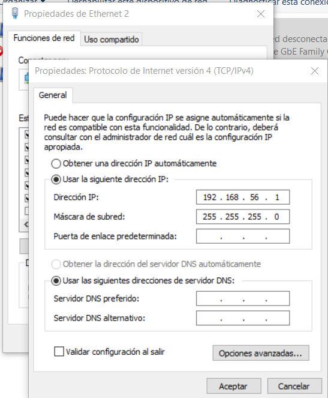
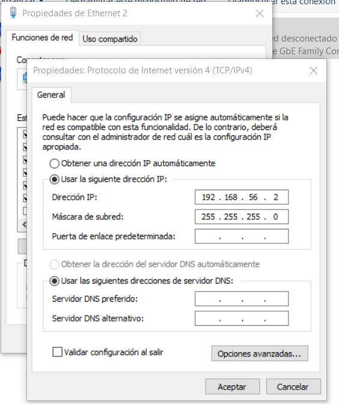
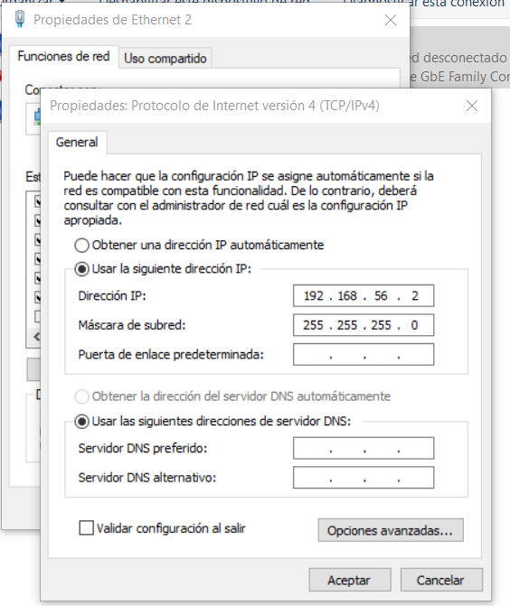
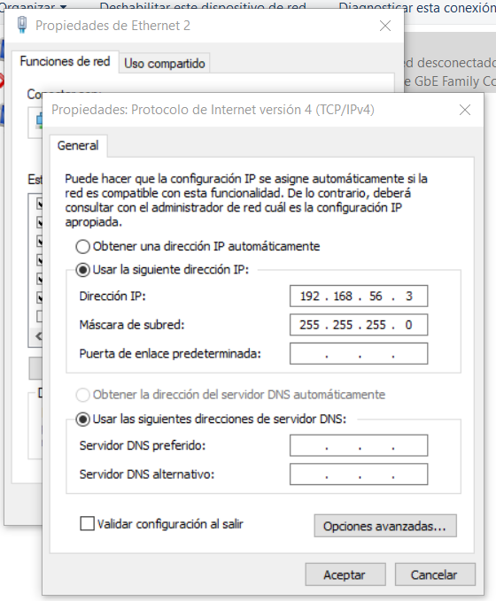
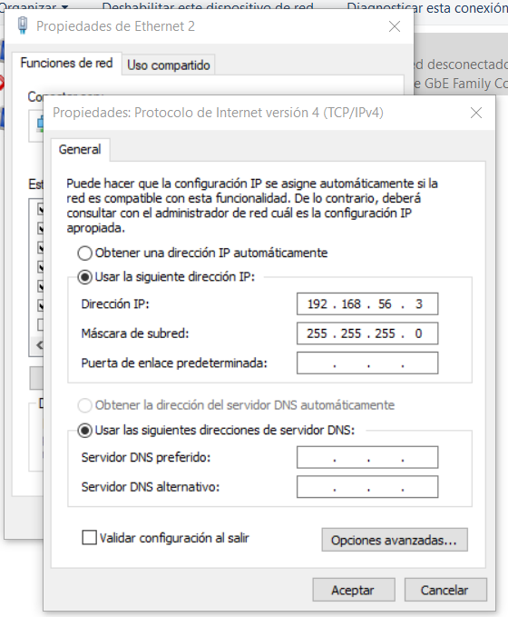
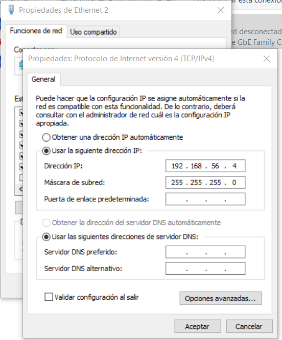
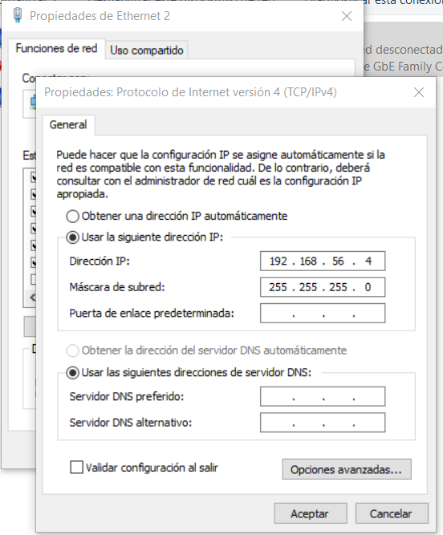
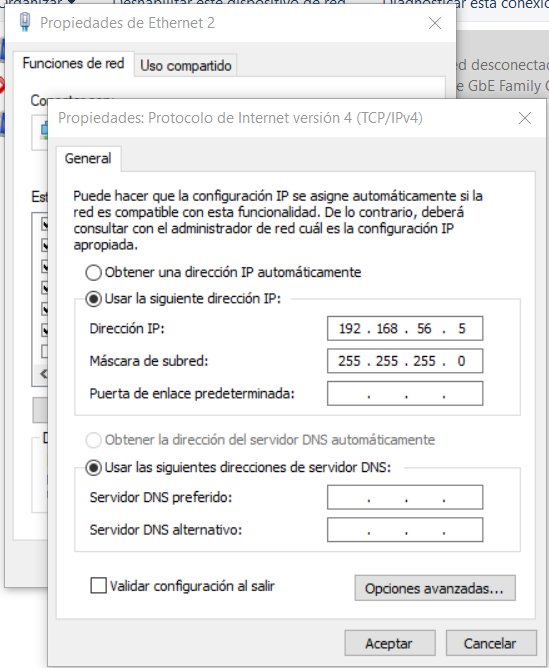
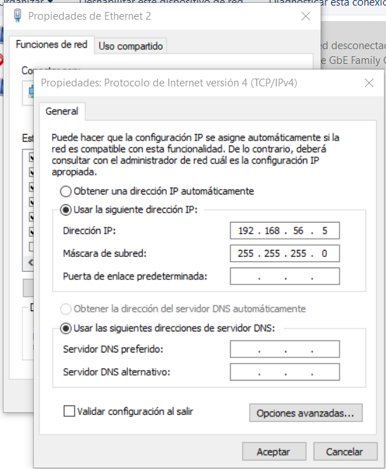

Cisco Packet tracert
Aquí tendremos una red con los siguientes materiales con 4 Rack, 4 Switch y 30 PC

Aquí haremos la comprobaciones de los ping que hemos hecho
En cuanto a la parte de ping, te explicamos de que tuvimos éxito en ejecutarlo (poder acceder a la carpeta usando la red de compartir recursos) pero cuando ibamos a imprimir tuvimos un pequeño error de la impresora donde no nos detectaba el papel que nosotros introducimos, y una vez que funcionó ibamos a hacer la captura todo a la vez, y salió un error que nos sacó de la carpeta que se compartió
G1 a G2
Ping 1 al 2 y del 2 al 1

 


G2 a G3
Ping 2 al 2 y del 3 al 2
 


G3 a G4
Ping 3 al 4 y del 4 al 3
 


G4 a G5
Ping 4 al 5 y del 5 al 4
 
